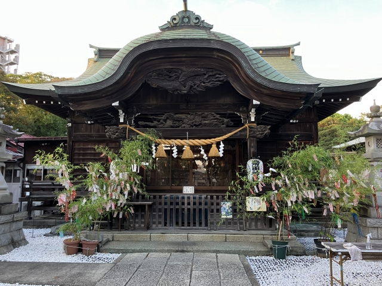

少し足をのばして神社へ
菊田神社は、京成津田沼駅の近くにある神社です。JR津田沼駅前から少し足をのばして、街並みを眺めながら訪ねる散歩先として紹介します。
鳥居や境内の雰囲気を楽しむのが、この散歩のポイントです。建物や木々に目を向けながら、ゆっくり歩いてみましょう。
散歩の楽しみ方
参拝する人の迷惑にならないように、静かに過ごしましょう。写真を撮るときは、現地の案内を確認してください。

菊田神社は、京成津田沼駅の近くにある神社です。JR津田沼駅前から少し足をのばして、街並みを眺めながら訪ねる散歩先として紹介します。
鳥居や境内の雰囲気を楽しむのが、この散歩のポイントです。建物や木々に目を向けながら、ゆっくり歩いてみましょう。
参拝する人の迷惑にならないように、静かに過ごしましょう。写真を撮るときは、現地の案内を確認してください。